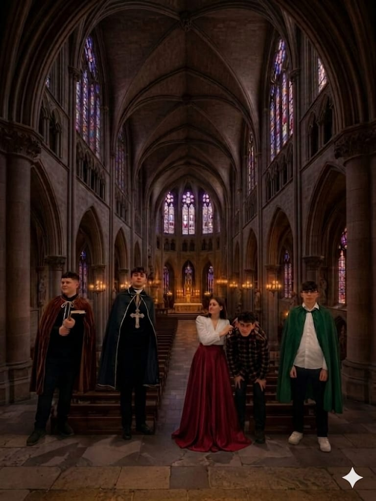
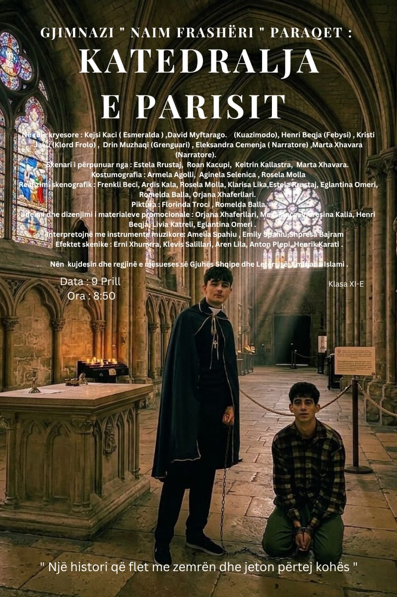

Katedralja e Parisit
Një projekt teatror nga klasa XI-E - Shkolla Naim Frashëri
Qëllimi i projektit
Qellimi i krijimit te ketij projekti eshte: zbulimi i talenteve te reja ne aktrim. klasa e cila e mori persiper kete projekt eshte klasa e XI-E. Klasa eshte e perbere nga 34 nxenes. Te gjithe nxenesit u ndane ne grupe te caktuara si: grupi i teknologjise, skenarit, kostumografise, reklames, biletave, fletepalosjeve, aktoreve. Data e projetit eshte caktuar me 16.04.2026. Ky projekt ne krye te tij ka pasur mesuese Emirjana Islami. pergatitjet per kete projekt kane marre nje kohe te konsiderueshme prej disa muajsh. C'do grup ka pasur detyra te vecante dhe nxenes te caktuar jane marre edhe me sjelljen e bazave materiale te nevojitura per realizimit te projetktit.
Lista e veshjeve te cilat jane dashur per tu sjelle kane qene:
Shami, mantele, bizhuteri, karramele, enë metalike, shporta, cokollata, lule, rroba, erashka, kapele, kembana, katedralja e ndertuar me kartona dhe pelhura.
| Kategoria | Anëtarët |
|---|---|
| Teknologjia | Anton Pelpi Aren Lila Klevis Salillari Henrik Karati Erni Xhumra |
| Skenari | Estela Rustaj Roan Kacupi Marta Xhavara Keitrin Kallastra |
| Kostumografia | Armela Agolli Aginela Selenica Rosela Molla Eglantina Omeri |
| Aktorët | Kejsi Kaci (Esmeralda) David Myftarago (Kuazimodo) Kristi Jaku Henri Beqja | Audio book | Emirjana Islami Arsa Kapllani Estja Hyseni Kejsi Bicaku Esma Hodo Ester Bodlli Nejla Mecani Eljana Lushaku Unejsa Shehaj Marta Xhavara Ina Beqa Joana Lika Greta Gongo Shpresa Bajram Sindi Musabelliu Irsa Vila Jorilda Sheshi Amelia Spahiu Eleksandra Cemenja Eglantina Omeri Glesilda Sylaj Megi Kola Irene Gaci |



